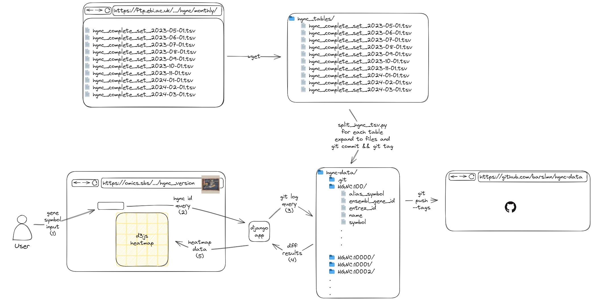
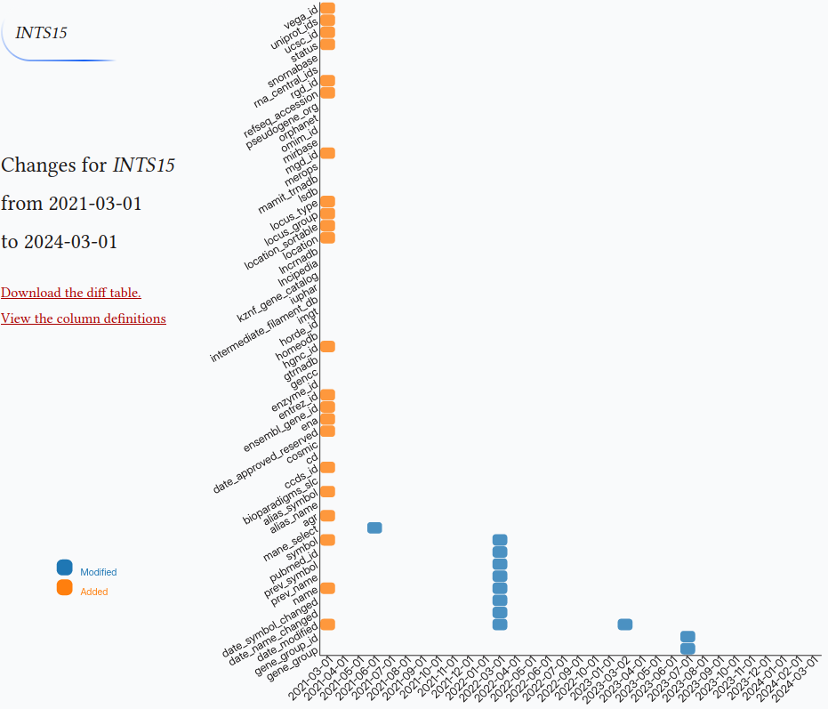

HGNC Version Control
Table of Contents
1. Introduction
This will be the start of a series of posts about tracking versions of the genetic concepts of gene symbols, transcripts, and variants. Gene is a hard-to-define concept. HUGO Gene Nomenclature Committee (HGNC) is the authority that curates the human gene symbols. The HGNC guidelines page summarizes genes in the following sections:
- Protein coding genes
- Pseudogenes
- Non-coding RNA genes
- Readthrough transcripts
- Genes only found in a subset of the population
Gene symbols and their other annotations are not static and change. Especially with newer technologies like perturb-seq we are now discovering more of their biological functions and naming them accordingly. (Replogle et al. 2022) HGNC summarize the new gene and gene family entries, and what changed in their 2023 paper. (Seal et al. 2022)
They release the new data table on gene symbols monthly. With these, they also make available the monthly changes. I wanted something a bit more comprehensive than these monthly changes and the ability to keep track of the gene changes over the months.
2. Implementation
For this, I come up with the following:
- We create a git repository.
- We flatten the tables to the files:
- HGNC IDs as the subdirectories, columns as file names and the rows as the data in the files.
- We then commit and tag the month.
- Repeat steps 2 and 3 for every month.
- Query the repository for the given symbol.
- Make a heatmap from the results.

2.1. Why git?
Git is the first thing that comes to mind when version control is concerned. It seemed like a good project to learn git. It may be more performant or easier to maintain in a database like dolt, or using django-reversion.
2.2. Why not just diff the whole file?
One concern here is the fact that we are flatting the contents of the file to a lot of files; 1005973 files to be exact. It would be the number of rows × the number of columns which is 43903 × 54 but most of the cells are empty so those are not written.
While flattening we use HGNC ids for the subdirectories. This way we can directly query the changes made to that id using the following command.
Git syntax allows for directory-based query by giving a directory name after “–”
git --git-dir <repo_path> log -p --name-status --pretty="%d" -- HGNC:<hgnc_id>
This gives a much more concise result and, easier to parse id-based diffs. It would be harder to discern if the text files as a whole were committed. It takes around ~75 seconds to commit a single file.
2.3. Notes on storage
The text files that HGNC stores take around 500Mb as of today. Individual TXT files are about 16M, so it will increase linearly over the months at a rate of 16 M.
Flatting out the separate files takes around 4.5G. Since we are just overwriting, this number should change in case HGNC adds or removes columns.
The bare git repository with all the months committed takes around 115M. Every new commit is around 1M, so the increase rate is smaller compared to TXT files. I am only keeping the bare repo on the website so it’s space efficient.
❯ du -hs txts 518M txts ❯ du -hs hgnc-data 4.4G hgnc-data ❯ du -hs ../hgnc-data.git 115M ../hgnc-data.git
3. App

There is a simple input box for entering the gene symbol with autocomplete. After the symbol is selected Django runs a subprocess and queries the repository with the two following commands:
git --git-dir {os.path.join(hgnc_data_path, "hgnc-data.git")} log -p --name-status --pretty="%d" -- HGNC:{hgnc_id} git --git-dir {os.path.join(hgnc_data_path, "hgnc-data.git")} log -p --pretty="%d" -- HGNC:{hgnc_id} | grep -v "^index\|^---\|^+++\|No newline \|^@\|^new"| sed "/^\s*$/d"
After a bit more parsing and merging the result of the two commands a simple Comma separated values (CSV), ready to be plotted, is returned to the frontend.
Appendix
HGNC parse and commit script
The Script parses and writes HGNC tables to the files. This script also tags and commits the changes. The git repository should be initialized before running the script.
Click to see the implementation
#!/usr/bin/env python3 import csv import sys from datetime import datetime from pathlib import Path import subprocess column_names = [ │ "hgnc_id", │ "symbol", │ "name", │ "locus_group", │ "locus_type", │ "status", │ "location", │ "location_sortable", │ "alias_symbol", │ "alias_name", │ "prev_symbol", │ "prev_name", │ "gene_group", │ "gene_group_id", │ "date_approved_reserved", │ "date_symbol_changed", │ "date_name_changed", │ "date_modified", │ "entrez_id", │ "ensembl_gene_id", │ "vega_id", │ "ucsc_id", │ "ena", │ "refseq_accession", │ "ccds_id", │ "uniprot_ids", │ "pubmed_id", │ "mgd_id", │ "rgd_id", │ "lsdb", │ "cosmic", │ "omim_id", │ "mirbase", │ "homeodb", │ "snornabase", │ "bioparadigms_slc", │ "orphanet", │ "pseudogene_org", │ "horde_id", │ "merops", │ "imgt", │ "iuphar", │ "kznf_gene_catalog", │ "mamit_trnadb", │ "cd", │ "lncrnadb", │ "enzyme_id", │ "intermediate_filament_db", │ "rna_central_ids", │ "lncipedia", │ "gtrnadb", │ "agr", │ "mane_select", │ "gencc", ] date_column_names = [ │ "date_approved_reserved", │ "date_symbol_changed", │ "date_name_changed", │ "date_modified", ] hgnc_data_path = sys.argv[1] hgnc_data_path = Path(hgnc_data_path) repo_path = sys.argv[2] repo_path = Path(repo_path) repo_path.mkdir(exist_ok=True) def get_monthly_files(hgnc_data_path): │ """ │ The HGNC ftp directory has both tsv and txt for some files. │ They are duplicates. │ We are gonna just get the txt files. │ """ │ hgnc_tsv_paths = { │ │ datetime.strptime(path.stem.split("_")[-1], "%Y-%m-%d"): path │ │ for path in hgnc_data_path.glob("hgnc_complete_set*.txt") │ } │ return dict(sorted(hgnc_tsv_paths.items())) │ │ def split_hgnc_tsv(repo_path, hgnc_tsv_path): │ │ │ with open(hgnc_tsv_path, "r") as f: │ │ reader = csv.DictReader(f, delimiter="\t") │ │ for row in reader: │ │ │ """ │ │ │ Puts None if value is empty string ''. │ │ │ This │ │ │ """ │ │ │ row = {k: (v if v else None) for k, v in row.items()} │ │ │ │ │ │ """ │ │ │ I just copy pasted the column_names from the latest tsv. │ │ │ Some of the column names don't exist in the older files. │ │ │ Below section adds these keys with value None. │ │ │ This way we are preventing KeyErrors down the road. │ │ │ """ │ │ │ for column_name in column_names: │ │ │ │ try: │ │ │ │ │ row[column_name] │ │ │ │ except KeyError: │ │ │ │ │ row[column_name] = None │ │ │ │ │ │ │ │ """ │ │ │ ccds_ids are unsorted which create false diffs │ │ │ That's why we are sorting them. │ │ │ """ │ │ │ if row["ccds_id"]: │ │ │ │ row["ccds_id"] = "|".join(sorted(row["ccds_id"].split("|"))) │ │ │ │ │ │ │ """ │ │ │ We create seperate directories for each gene │ │ │ and write the values to seperate files. │ │ │ """ │ │ │ entry_path = repo_path.joinpath(row["hgnc_id"]) │ │ │ entry_path.mkdir(exist_ok=True) │ │ │ for column_name in column_names: │ │ │ │ if row[column_name]: │ │ │ │ │ with open(entry_path.joinpath(column_name), "w") as f: │ │ │ │ │ │ │ f.write(row[column_name]) │ │ │ │ │ │ │ │ │ │ │ │ │ │ def commit_and_tag(repo_path, commit_msg, tag_name): │ git_add_cmd = ["git", "add", "."] │ git_commit_cmd = ["git", "commit", "-m", commit_msg] │ git_tag_cmd = ["git", "tag", tag_name] │ │ subprocess.run(git_add_cmd, cwd=str(repo_path)) │ subprocess.run(git_commit_cmd, cwd=str(repo_path)) │ subprocess.run(git_tag_cmd, cwd=str(repo_path)) │ │ def main() : │ hgnc_tsv_paths = get_monthly_files(hgnc_data_path) │ print(hgnc_data_path) │ print(hgnc_tsv_paths) │ for date, hgnc_tsv_path in hgnc_tsv_paths.items(): │ │ print(date.strftime('"%Y-%m-%d",')) │ │ commit_msg = f'Added hgnc for date {date.strftime("%Y-%m-%d")}' │ │ tag_name = f'{date.strftime("%Y-%m-%d")}' │ │ │ │ subprocess.run("rm -rf HGNC:*", cwd=str(repo_path), shell=True) │ │ │ │ split_hgnc_tsv(repo_path, hgnc_tsv_path) │ │ commit_and_tag(repo_path, commit_msg, tag_name) │ │ │ subprocess.run(["git", "push", "--tags"], cwd=str(repo_path)) │ │ if __name__ == "__main__": │ main()
Visualization frontend
Heatmap is drawn with the d3.js.
Click to see the implementation
function drawheatmap(hgnc_id, hgnc_symbol) { │ const margin = {top: 0, right: 20, bottom: 80, left: 400}, │ width = 1050 - margin.left - margin.right, │ height = 900 - margin.top - margin.bottom; │ │ // append the svg object to the body of the page │ const svg = d3.select("#heatmap") │ .append("svg") │ .attr("width", width + margin.left + margin.right) │ .attr("height", height + margin.top + margin.bottom) │ .append("g") │ .attr("transform", `translate(${margin.left}, ${margin.top})`); │ │ │ const myGroups = [ │ "2021-03-01", "2021-04-01", "2021-05-01", "2021-06-01", "2021-07-01", │ "2021-08-01", "2021-09-01", "2021-10-01", "2021-11-01", "2021-12-01", │ "2022-01-01", "2022-03-01", "2022-04-01", "2022-05-01", "2022-06-01", │ "2022-07-01", "2022-09-01", "2022-10-01", "2023-01-01", "2023-03-02", │ "2023-04-01", "2023-05-01", "2023-06-01", "2023-07-01", "2023-08-01", │ "2023-09-01", "2023-10-01", "2023-11-01", "2023-12-01", "2024-01-01", │ "2024-02-01", "2024-03-01", "2024-04-01", "2024-06-04", │ ] │ //Read the data │ heatmap_data_url="/bioscripts/hgnc_version/heatmap_data/".concat(hgnc_id) │ d3.csv(heatmap_data_url).then( function(data) { │ │ // Labels of row and columns -> unique identifier of the column called 'group' and 'variable' │ // const myGroups = Array.from(new Set(data.map(d => d.group))).sort((a, b) => new Date(a) - new Date(b)); │ const myVars = Array.from(new Set(data.map(d => d.variable))) │ │ │ // Build X scales and axis: │ const x = d3.scaleBand() │ │ .range([ 0, width ]) │ │ .domain(myGroups) │ │ .padding(0.05); │ svg.append("g") │ │ .style("font-size", 15) │ │ .attr("transform", `translate(0, ${height})`) │ │ .call(d3.axisBottom(x).tickSize(0)) │ │ .selectAll("text") │ │ .attr("transform", "rotate(-45)") │ │ .style("text-anchor", "end") │ │ .select(".domain").remove() │ │ │ // Build Y scales and axis: │ const y = d3.scaleBand() │ │ .range([ height, 0 ]) │ │ .domain(myVars) │ │ .padding(0.05); │ svg.append("g") │ │ .style("font-size", 15) │ │ .call(d3.axisLeft(y).tickSize(0)) │ │ .selectAll("text") │ │ .attr("transform", "rotate(-30)") │ │ .style("text-anchor", "end") │ │ .select(".domain").remove() │ │ │ // Build color scale │ const myColor = d3.scaleOrdinal() │ .domain(["M", "D", "A"]) // Values in your data │ .range(d3.schemeCategory10); │ │ // create a tooltip │ const tooltip = d3.select("#heatmap") │ │ .append("div") │ │ .style("opacity", 0) │ │ .attr("class", "tooltip") │ .style("position", "absolute") // Set the position to absolute │ │ .style("border", "solid") │ │ .style("border-width", "2px") │ │ .style("border-radius", "5px") │ │ .style("padding", "5px") │ │ .style("background-color", "var(--body-bg-color)") │ │ │ // Three function that change the tooltip when user hover / move / leave a cell │ const mouseover = function(event,d) { │ │ tooltip │ │ .style("opacity", 1) │ │ d3.select(this) │ │ .style("stroke", "black") │ │ .style("opacity", 1) │ } │ const mousemove = function(event,d) { │ │ tooltip │ │ .html("Diff:" + d.diff) │ │ .style("left", (event.pageX) + "px") │ │ .style("top", (event.pageY) + "px") │ } │ const mouseleave = function(event,d) { │ │ tooltip │ │ .style("opacity", 0) │ │ d3.select(this) │ │ .style("stroke", "none") │ │ .style("opacity", 0.8) │ } │ │ // add the squares │ svg.selectAll() │ │ .data(data, function(d) {return d.group+':'+d.variable;}) │ │ .join("rect") │ │ .attr("x", function(d) { return x(d.group) }) │ │ .attr("y", function(d) { return y(d.variable) }) │ │ .attr("rx", 4) │ │ .attr("ry", 4) │ │ .attr("width", x.bandwidth() ) │ │ .attr("height", y.bandwidth() ) │ │ .style("fill", function(d) { return myColor(d.value)} ) │ │ .style("stroke-width", 4) │ │ .style("stroke", "none") │ │ .style("opacity", 0.8) │ │ .on("mouseover", mouseover) │ │ .on("mousemove", mousemove) │ │ .on("mouseleave", mouseleave) │ │ // Define legend data const legendData = ["Modified", "Deleted", "Added"]; // Define legend dimensions const legendWidth = 100; // Adjust width as needed const legendHeight = 30 * legendData.length; // Assuming each legend item has a height of 30 // Append a group element for the legend const legend = svg.append("g") │ .attr("class", "legend") │ .attr("transform", `translate(${margin.left}, ${height + margin.top})`); // Position the legend at the bottom left │ const rectRadius = 7; // Adjust the radius of the rounded corners as needed const rectHeight = 20; // Height of each legend item rectangle const gap = 5; // Gap between legend items // Append rectangles and text for each legend item const legendItems = legend.selectAll(".legend-item") │ .data(legendData) │ .enter() │ .append("g") │ .attr("class", "legend-item") │ .attr("transform", (d, i) => `translate(0, ${i * (rectHeight + gap)})`); // Adjusted vertical positioning with gap │ legendItems.append("rect") │ .attr("x", -margin.left - 330) │ .attr("y", -120) │ .attr("width", 20) │ .attr("height", rectHeight) │ .attr("rx", rectRadius) // Set the horizontal radius for rounded corners │ .attr("ry", rectRadius) // Set the vertical radius for rounded corners │ .style("fill", d => myColor(d[0])); // Get the color based on the first character of the legend item │ legendItems.append("text") │ .attr("x", -margin.left - 300) │ .attr("y", -100) │ .style("font-size", "12px") │ .style("font-family", "sans-serif") // Set font family to sans-serif │ .style("fill", d => myColor(d[0])) // Get the color based on the first character of the legend item │ .text(d => d); │ │ }) │ │ // Add title to graph │ svg.append("foreignObject") │ │ .attr("x", -margin.left) │ │ .attr("y", +180) │ │ .attr("width", width) │ │ .attr("height", 150) │ .append("xhtml:div") │ │ .style("font-size", "1.2em") │ │ .html(`Changes for <span class="gene-symbol">${hgnc_symbol}</span> </br> from ${myGroups[0]} </br> to ${myGroups[myGroups.length -1]}`); │ // Add subtitle to graph │ svg.append("foreignObject") │ │ .attr("x", -margin.left) │ │ .attr("y", +350) │ │ .attr("width", width) │ │ .attr("height", 150) │ │ .append("xhtml:div") │ │ .style("font-size", ".8em") │ │ .style("fill", "grey") │ │ .style("max-width", 400) │ │ .html(`<a href="${heatmap_data_url}">Download the diff table</a> </br> <a href="https://www.genenames.org/download/archive/">View the column definitions</a>`); }
Django backend
This part gets the HGNC ID from the form and returns the diff data for d3.js.
Click to see the implementation
def left_join_lists(list1, list2): │ joined_list = [] │ │ for sublist1 in list1: │ │ joined_sublist = sublist1.copy() │ │ │ │ for sublist2 in list2: │ │ │ if sublist1[:2] == sublist2[:2]: │ │ │ │ joined_sublist.extend(sublist2[2:]) │ │ │ │ break │ │ joined_list.append(joined_sublist) │ │ │ return joined_list │ │ class Echo: │ """An object that implements just the write method of the file-like │ interface. │ """ │ │ def write(self, value): │ │ """Write the value by returning it, instead of storing in a buffer.""" │ │ return value │ │ │ │ def get_heatmap_data(request, hgnc_id): │ cmd = f'git --git-dir {os.path.join(hgnc_data_path, "hgnc-data.git")} log -p --name-status --pretty="%d" -- HGNC:{hgnc_id}' │ │ data = subprocess.check_output(cmd, shell=True).decode("utf-8") │ │ pattern = re.compile(r"\(tag: (\d{4}-\d{2}-\d{2})\)|(\S+)\s+(\S+)") │ │ name_status = [] │ current_group = None │ for line in data.splitlines(): │ │ match = pattern.search(line) │ │ if match: │ │ │ if match.group(1): │ │ │ │ current_group = match.group(1) │ │ │ else: │ │ │ │ file_name = match.group(3).split("/")[-1] │ │ │ │ value = match.group(2) │ │ │ │ name_status.append([current_group, file_name, value]) │ │ │ │ │ cmd = rf'git --git-dir {os.path.join(hgnc_data_path, "hgnc-data.git")} log -p --pretty="%d" -- HGNC:{hgnc_id} | grep -v "^index\|^---\|^+++\|No newline \|^@\|^new"| sed "/^\s*$/d"' │ data = subprocess.check_output(cmd, shell=True).decode("utf-8") │ pattern = re.compile( │ │ r"\(tag: (\d{4}-\d{2}-\d{2})\)|(diff --git \S+\s+\S+)|(^\+|^-)" │ ) │ diffs = [] │ current_group = None │ for line in data.splitlines(): │ │ match = pattern.search(line) │ │ if match: │ │ │ if match.group(1): │ │ │ │ current_group = match.group(1) │ │ │ elif match.group(2): │ │ │ │ file_name = match.group(2).split("/")[-1] │ │ │ │ diffs.append([current_group, file_name, []]) │ │ │ elif match.group(3): │ │ │ │ diffs[-1][2].append(line) │ diffs = [[diff[0], diff[1], "\n".join(diff[2])] for diff in diffs] │ │ # Process the data │ header = ["group", "variable", "value", "diff"] │ rows = left_join_lists(name_status, diffs) │ rows.insert(0, header) │ │ pseudo_buffer = Echo() │ writer = csv.writer(pseudo_buffer) │ return StreamingHttpResponse( │ │ (writer.writerow(row) for row in rows), │ │ content_type="text/csv", │ │ headers={"Content-Disposition": f'attachment; filename="HGNC:{hgnc_id}.csv"'}, │ )